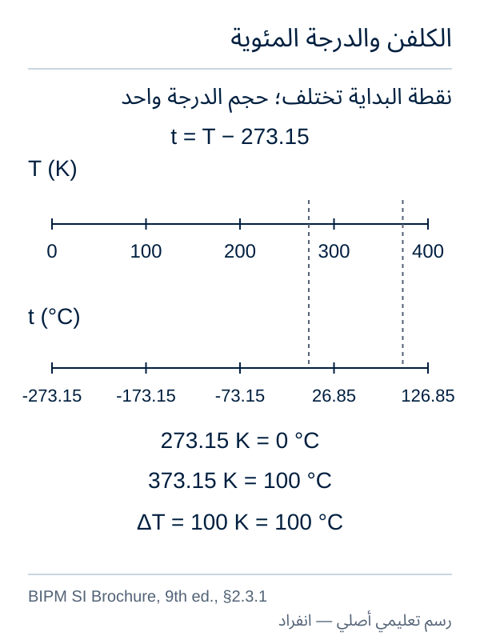

الكلفن
Kelvin
وحدة قياس درجة الحرارة في النظام الدولي، تبدأ من الصفر المطلق، ورمزها K.
وحدة قياس درجة الحرارة في النظام الدولي، تبدأ من الصفر المطلق، ورمزها K.
الكلفن، رمزه K، هو وحدة النظام الدولي لدرجة الحرارة الديناميكية الحرارية؛ يُعرَّف بتثبيت القيمة العددية لثابت بولتزمان k عند 1.380 649×10⁻²³ معبَّراً عنها بوحدة J K⁻¹، أي kg m² s⁻² K⁻¹، حيث تُعرَّف الكيلوغرام والمتر والثانية عبر h وc وΔν_Cs.
الكلفن ليس مرادفاً للدرجة المئوية: نقطة البداية مختلفة (الصفر المطلق مقابل نقطة تجمد الماء)، لكن مقدار الوحدة واحد، فالفارق الحراري بكلفن يساوي الفارق بدرجة مئوية. والكلفن ليس وحدة طاقة: هو وحدة مقدار أساسي، والجول وحدة طاقة، والعلاقة بينهما تمرّ بثابت بولتزمان لا بمعامل تحويل مباشر. وليس هو درجة الحرارة الديناميكية الحرارية نفسها: الكلفن وحدة، وT مقدار.
الماء يتجمد عند 273.15 K و0 °م؛ والفرق بين 273.15 و373.15 K يساوي مئة كلفن، وهو نفسه الفرق بين 0 و100 °م.
كيف تعمل الظاهرة؟
الكلفن لا يُعرَّف الآن بنقطة مرجعية مادية بل بثابت فيزيائي: يُثبَّت ثابت بولتزمان k عدداً، فتصير وحدة الحرارة نتيجة لذلك. الآلية: الطاقة الحرارية المتوسطة لكل درجة حرية في نظام عند التوازن تتناسب مع kT؛ فإذا ثُبِّت k صار تحديد كلفن واحد مسألة قياس طاقة، لا مسألة إسناد إلى نقطة ثلاثية. ولهذا انقلب الاتجاه: قبل 2019 كانت النقطة الثلاثية تامة وk مقيسة؛ وبعد 2019 صار k تاماً والنقطة الثلاثية مقيسة بعدم يقين نسبي 3.7×10⁻⁷ عند الاعتماد.
العلاقة بالأرقام
k = 1.380 649×10⁻²³ J K⁻¹ تماماً. أثر التعريف: كلفن واحد = تغيّر في درجة الحرارة الديناميكية الحرارية يُنتج تغيّراً في الطاقة الحرارية kT بمقدار 1.380 649×10⁻²³ J. T_TPW = 273.16 K بعد التعريف (غير تامة). T₀ = 273.15 K في t = T − T₀. الفارق الحراري: 1 K = 1 °م كفرق، لا كنقطة بداية.
مفاهيم متقاربة
ثلاثة تمييزات يجب أن تظهر في النص: (1) الكلفن وحدة، ودرجة الحرارة الديناميكية الحرارية T مقدار — التعريف يخص الوحدة. (2) الكلفن ≠ الدرجة المئوية في المنشأ، = لها في المقدار. (3) الكلفن ≠ الجول: لا معامل تحويل مباشر بينهما، بل k. وتمييز رابع عملي: T_TPW = 273.16 K ليست 273.15 K؛ الثاني هو T₀ المئوية.
حدود التطبيق
حدود يجب إعلانها: (أ) التعريف يخص الوحدة لا المقدار؛ تعريف المقدار في ISO 80000-5 لم يُقرأ في هذه الجلسة ولا يُنسب إليه نص. (ب) الكلفن يُدرك عملياً عبر ITS-90 التي تعطي T90 وt90 تقريباً لـT وt، لا مطابقة — بنص SI Brochure ص 19. (ج) بعد 2019 يمكن نظرياً تحقيق الكلفن ابتدائياً عند أي نقطة على السلّم، لكن التحقيق العملي يبقى محدوداً بدقة الأجهزة. (د) لا يُستنتج من هذا التدقيق أن كل أرقام الكلفن في الدفعة سليمة — فُحص هذا العنصر وحده.

| الكمية | القيمة | المصدر |
|---|---|---|
| ثابت بولتزمان k — قيمة عددية مثبَّتة (exact) | 1.380 649×10⁻²³ J K⁻¹ | [1] |
| أثر التعريف: تغيّر الطاقة الحرارية kT المقابل لكلفن واحد | 1.380 649×10⁻²³ J | [1] |
| درجة حرارة النقطة الثلاثية للماء T_TPW بعد التعريف الحالي | 273.16 K | [1] |
| عدم اليقين النسبي المعياري لـT_TPW عند اعتماد التعريف | 3.7×10⁻⁷ | [1] |
| المرجع الحراري T₀ في تعريف درجة الحرارة المئوية | 273.15 K | [1] |
| ثابت بولتزمان k — قيمة CODATA 2022 | 1.380 649×10⁻²³ J K⁻¹ | [2] |
المصادر
- 1 The International System of Units (SI), 9th edition (2019), updated 2026 — §2.3.1 «The kelvin» — BIPM — Bureau International des Poids et Mesures. www.bipm.org/documents/20126/41483022/SI-Brochure-9-EN.pdf · اطُّلع عليه 2026-11-21
- 2 CODATA Value: Boltzmann constant — NIST — Physical Measurement Laboratory, CODATA. physics.nist.gov/cgi-bin/cuu/Value?k · اطُّلع عليه 2026-11-21
- 3 SI base units — kelvin (صفحة معيارية) — BIPM. www.bipm.org/en/si-base-units/kelvin · اطُّلع عليه 2026-11-21
استشهد بهذا المصطلح
الصيغتان مبنيتان من بيانات الصفحة نفسها: العنوان والتاريخ ورابط النسخة المنشورة.
الكلفن — Kelvin. (2026). ديوان المعرفة — انفراد. https://infiradev.com/diwan/terms/kelvin.html
@misc{kelvin2026,
title = {الكلفن},
titleaddon = {Kelvin},
howpublished = {{ديوان المعرفة — انفراد} — مرجع علمي عربي},
year = {2026},
url = {https://infiradev.com/diwan/terms/kelvin.html},
urldate = {2026-11-21},
note = {مراجعة علمية: عبدالله الهويدي — مراجعة في تطبيق انفراد}
}
راجعه: عبدالله الهويدي — مراجعة في تطبيق انفراد · 2026-11-21 · آخر تحديث 2026-11-21